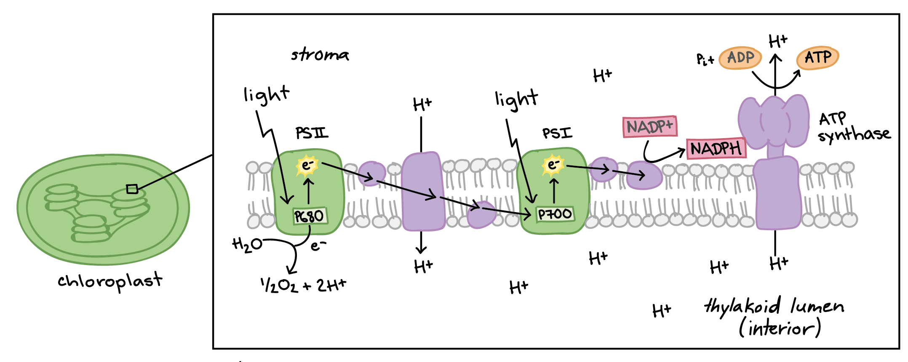
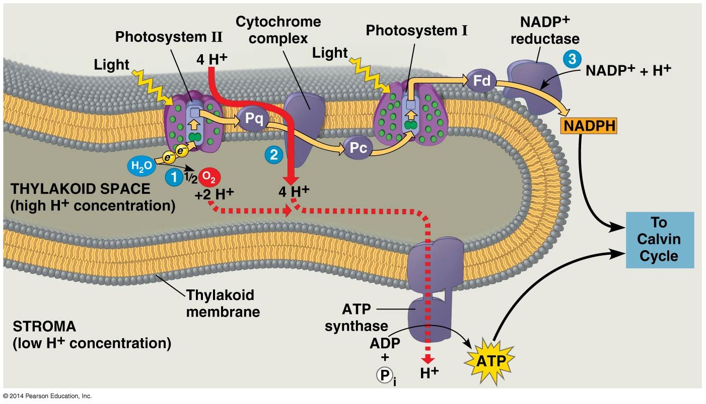
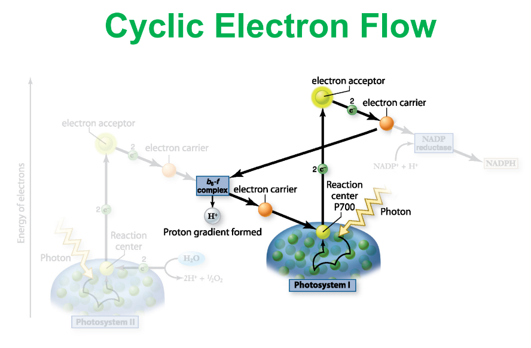

Light Reaction
Light Dependent Reaction
Step1
Photon strikes PSII and excites an electron
The excited electron left PSII and go to electron carrier (Redox Reaction, PSII oxidized)
H2O splited by Water-Spliting Enzyme, sends one electron
Oxygen and Hydrogen ion is then produced. Oxygen goes outside of the cell as a by-product, and the Hydrogen ion remains in Thylakoid space
Step2
Electrons from PSII is transfered through a series of REDOX reactions (ElectronTransportSystem)
As pass through those proteins, Energy is released to pump Hydrogen ions into the Thylakoid space
This finally creates a Ion-Gradient. The concentration of Hydrogen ions is higher inside and can be used for chemiosmosis
Step3
PhotoSystemI captures light Energy and excites electron
The excited electron leaves PhotoSystemI and then replenished by the electron from PhotoSystem II
Step4
NADP Reductase needs to be oxidized
So NADP+, the final electron acceptor, pulls electron out of the chain and produces NADPH

Chemiosmosis & ATP
ATP Synthase pumps H+ out of the membrane to make ATP
The left H+ ion is then combined with NADP+ to form NADPH in the stroma.

Electron Transport Cyclic Flow:
Occurs at PhotoSystem I
The electron carrier didn't take the excited electron to NADP reductase, but take it back to b6-f complex.
So no NADPH is made at this round because the electron is not delivered to NADP reductase. However this won't affect ATP syntheize and one more ATP is made.
Because a ratio of 3ATP:2NADPH is needed for Calvin Cycle to continue, so one more ATP must be made.

Back